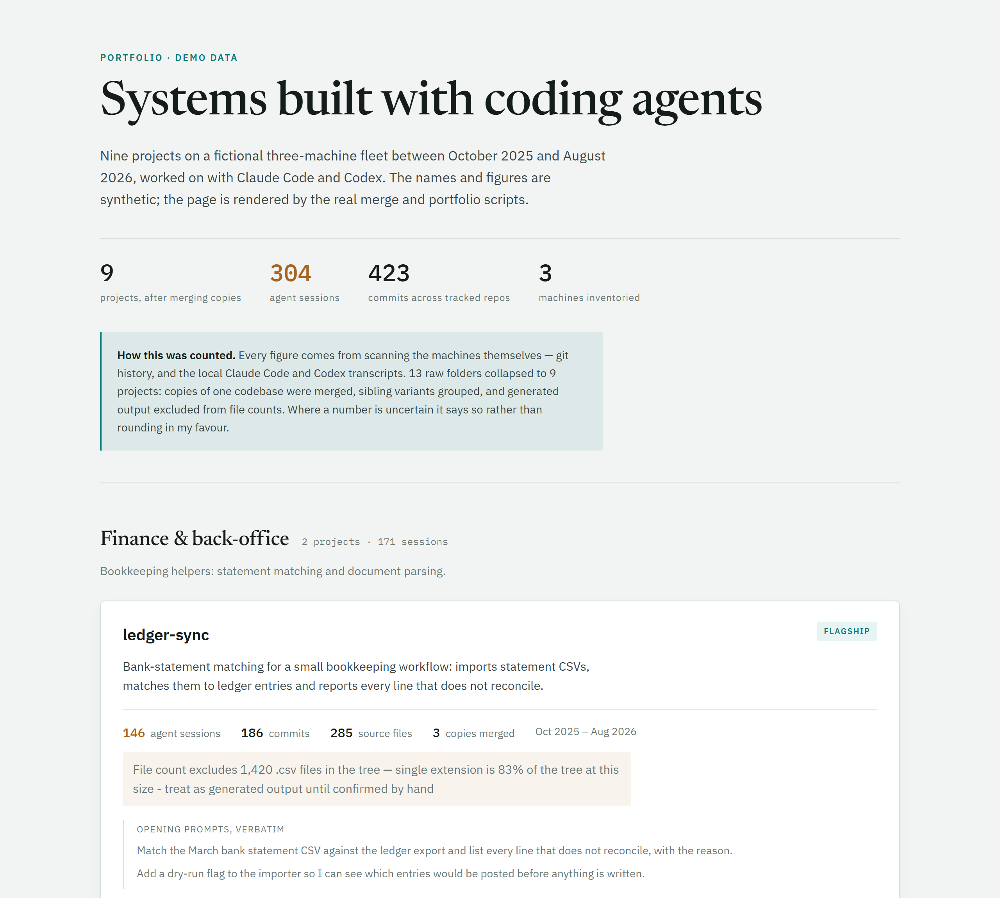
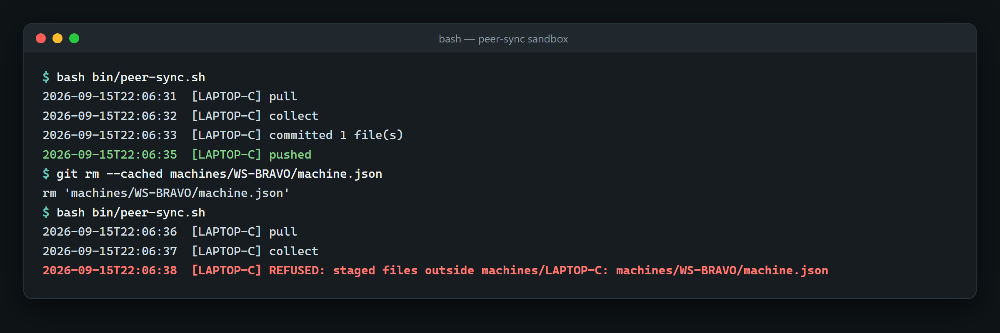
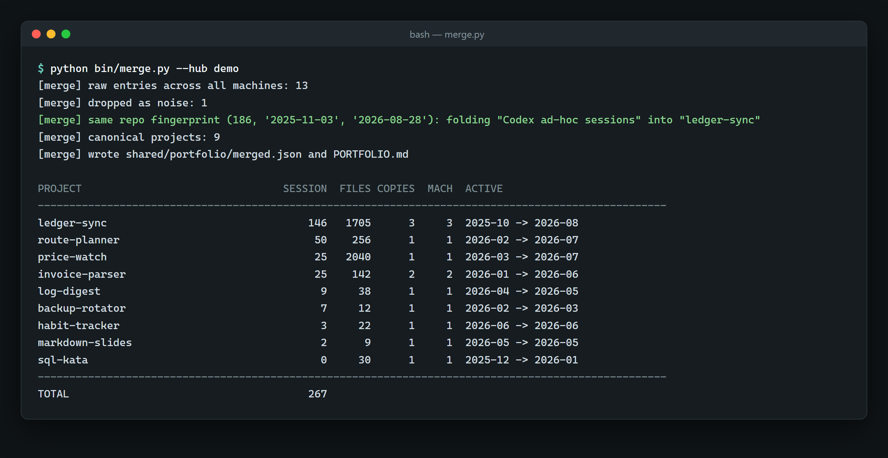

Agent Fleet Hub
A small, self-running coordination hub for one developer's machines. It inventories every project and coding-agent session on each machine, merges duplicates into one honest list, and keeps everything on GitHub under a single identity.
since Sep 2026, active · 66 commits · Python · PowerShell · Bash · code: private
The problem
I build most of my software with coding agents (Claude Code and Codex), on two Windows PCs and a MacBook. After a year, three things had gone wrong:
- Work drifted into copies: backup folders, old-PC migrations, downloads and agent worktrees. Nobody could say how many projects there really were.
- Agent sessions were invisible. Almost 2,000 sessions sat in local transcript folders, and much of that work had no commit history at all.
- Commit identity was split. Commits had been authored under an address tied to a second, dormant GitHub account, or under machine-generated addresses. Hundreds counted toward the wrong profile, or toward none.
What it does
- Inventories each machine: projects, languages, git history, and Claude Code and Codex sessions bound to the project they ran in. Metadata only, with secrets and long digit runs redacted on the way in.
- Merges across machines. At the last full merge, 57 raw folder entries became 22 real projects, with every agent session bound to the project it ran in.
- Renders a portfolio page where every number is computed and every doubtful number carries its caveat.
- Syncs itself. Each machine refreshes and pushes its own inventory daily, unattended.
- Puts repos under one identity before their first push, and strips oversized files from history when needed. One repository went from 710 MB to 158 MB.
- Keeps remote access alive with a watchdog that restarts a hung remote-desktop service.
How it works
Every machine holds a clone of one private git repository. Each machine writes only its own folder, so two machines never touch the same bytes.
flowchart LR
subgraph Fleet
A["Windows PC A<br/>main agent<br/>09:00"]
B["Windows PC B<br/>09:30"]
C["MacBook<br/>10:00"]
end
R[("Private git repo")]
A -- "machines/A/ + shared/" --> R
B -- "machines/B/ only" --> R
C -- "machines/C/ only" --> R
R -- "pull" --> A
A --> M["merge + portfolio"]
One scheduled cycle on a peer:
flowchart TD
L{"lock older<br/>than 90 min?"} -->|"fresh lock"| X["skip, exit 0"]
L -->|"no lock / stale"| P["pull --rebase --autostash"]
P -->|"fails"| AB["abort rebase, log, exit 0"]
P --> CO["re-collect inventory"]
CO --> S["stage own folder"]
S --> Q{"anything staged<br/>outside own folder?"}
Q -->|"yes"| RF["REFUSE: reset, log, exit 0"]
Q -->|"no"| CM["commit"]
CM --> PU["push, up to 3 retries"]
PU --> E["trim log, release lock, exit 0"]
Engineering notes
- The invariant is enforced in code. If anything outside the machine's own folder is staged, the sync resets and refuses. It fired on its first real run: it caught another machine's files that were staged for removal.
- Built for a scheduler. Each run has a lock that goes stale after 90 minutes, a log capped at 500 lines, and an exit code of 0 whatever happens. Runs are staggered so machines never rebase at once. Tasks run only while the user is logged in, by choice: the alternative is storing a password in a scheduled task.
- Merge, group, relate. Copies of one codebase merge: sessions add up, but file counts take the largest copy and are never summed. Sibling variants group. Projects in the same domain are only cross-linked. Git evidence beats folder names: nine "separate" folders turned out to be runs of one repository.
- Generated output is not counted as code. One project had 3,507 of 3,655 files as captured HTML, with 148 real source files; the page says so.
- Rewrite with a backup, and verify it. The re-author tool refuses repos that already have a GitHub remote or linked worktrees. It saves uncommitted work and rewrites a mirror. It then checks four things: the same commit count, the same tip tree, the same per-day commit pattern, and a single author. Only then does it push and move the live branch with a soft reset.
- Fixed in real use. A laptop whose hostname followed the network appeared as two machines; an alias map folds them back into one. An escaping bug had turned
\ain a Windows path into a BEL character. Counting commits over all refs had doubled one repo's history, so commits are now counted from HEAD.
How it is verified
- Identity resolution was tested with a real commit: one authored under the old address, which GitHub's API credited to the secondary account.
- The bridge counted as working only after three machines pushed on their own schedule and the main machine pulled all three cleanly.
- Every rewrite prints its checks and GitHub's linked or unlinked count per commit.
- The public profile was re-checked from a logged-out browser.
Stack
Python 3 (standard library), Windows PowerShell 5.1, Bash (3.2-compatible), git, GitHub CLI, git-filter-repo, Windows Task Scheduler, launchd, RustDesk, Claude Code, Codex.
Screenshots
The real code running on synthetic data. No client data appears anywhere.

The hub's real merge and portfolio scripts rendering a synthetic three-machine fleet: figures header, then a flagship card that folds three copies into one project and keeps generated files out of the source count.

The real peer-sync script in a local sandbox: one normal pull-collect-commit-push cycle, then a refused run because another machine's file was staged.

merge.py output on synthetic data: a Codex scratch folder is recognised as the same repository by its commit fingerprint and folded into ledger-sync.
Access
The code is private. To request a walkthrough or read access, open an issue in this repository or email eazamat360@gmail.com.